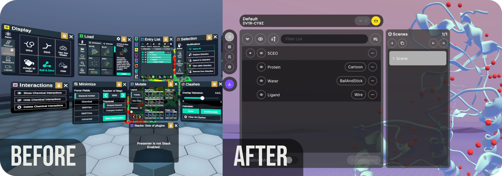
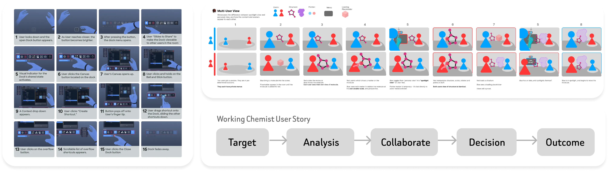
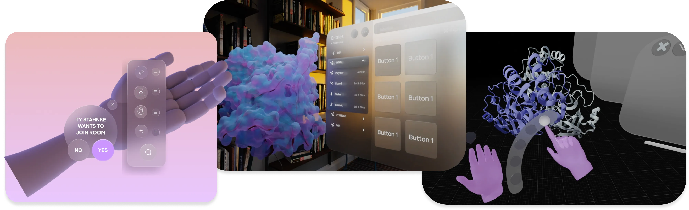
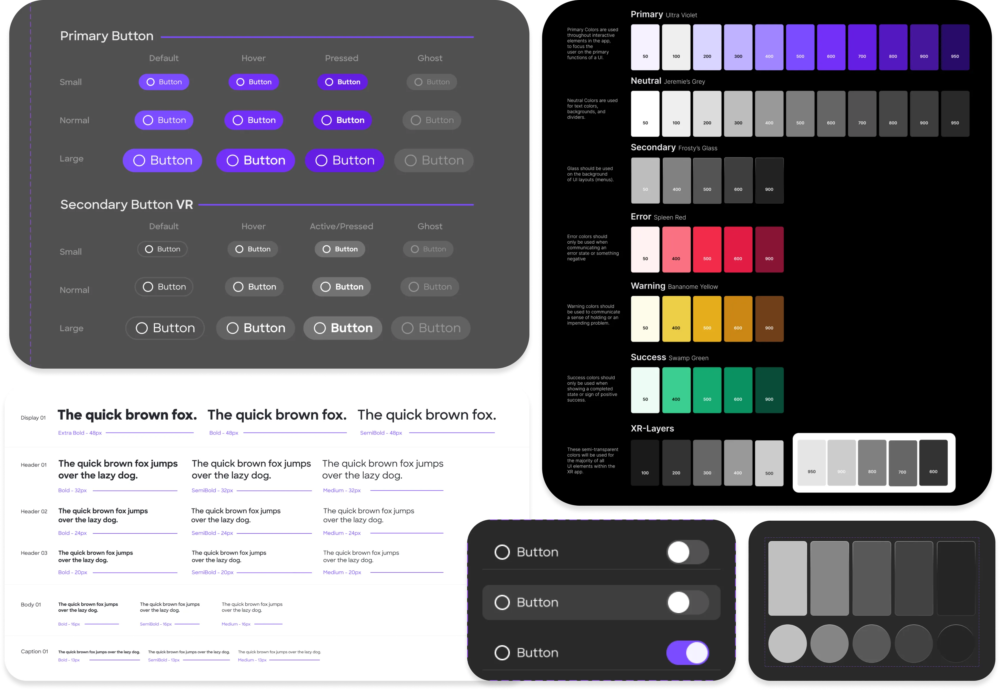
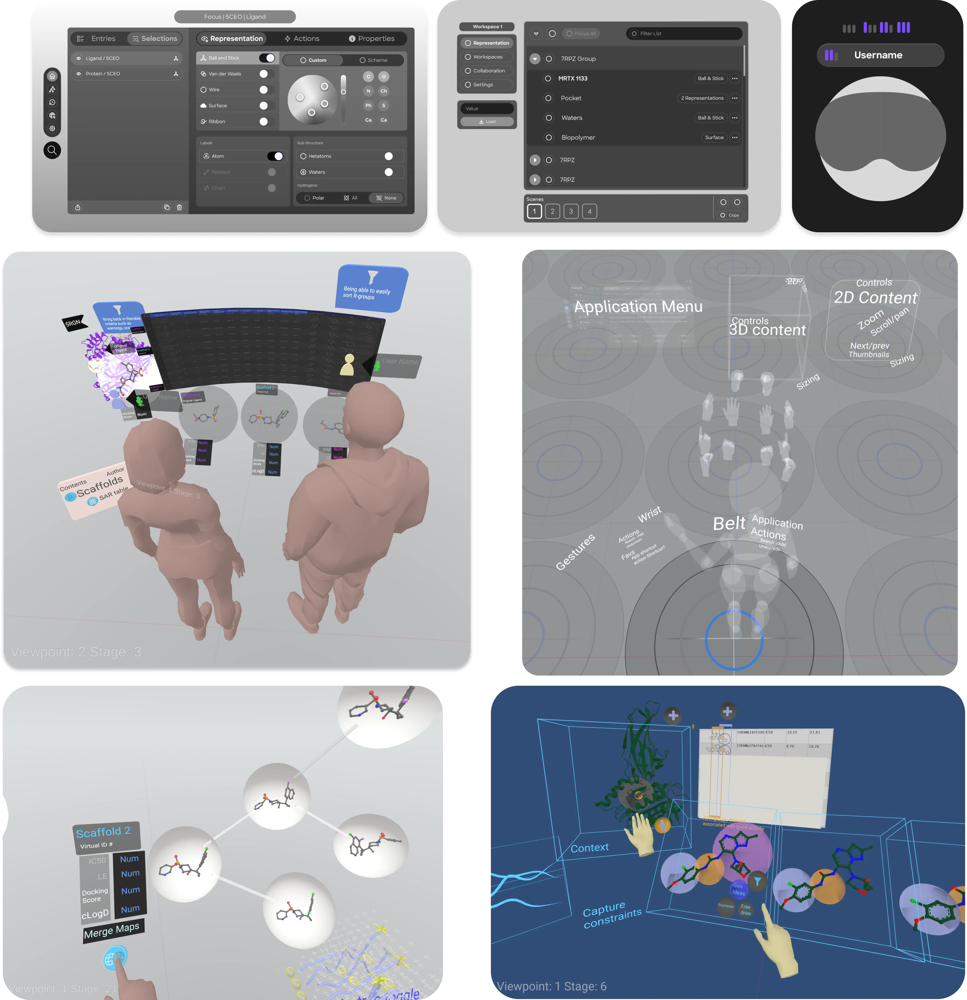
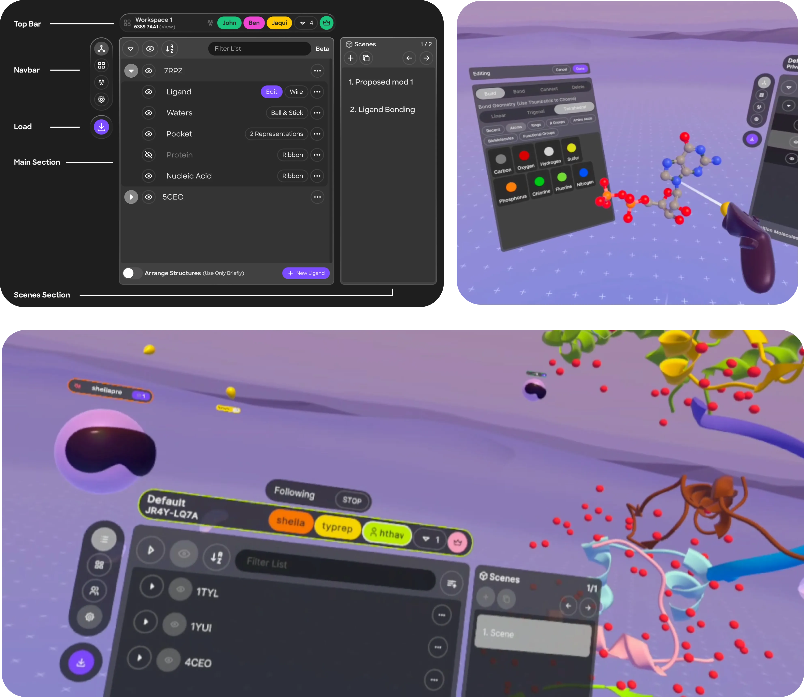
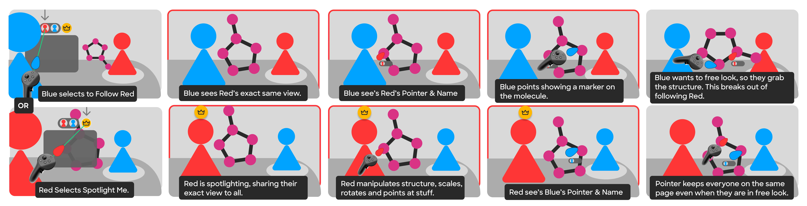

![](data:image/svg+xml,%3Csvg role='img' aria-label='John Hanacek signature' xmlns='http://www.w3.org/2000/svg' viewBox='0 0 150 75'%3E%3Cpath fill='%23ffffff' d='m148.6 13.3c-0.3-0.6-2.9 0.3-3.7 0.4l-0.4 0.2-0.8 0.1c-0.2-0.2-1 0.4-1.1 0.2l-0.8 0.3h-0.3l-1.1 0.3-0.7 0.1-0.9 0.3h-0.7l-0.8 0.3h-0.7l-0.7 0.3h-0.9l-0.6 0.3h-0.8l-0.8 0.3-0.9 0.1-0.8 0.2-0.7 0.1-0.3 0.2-0.6-0.1-0.2 0.3h-0.9l-0.8 0.3-0.3-0.1-1 0.4-0.4-0.1-0.3 0.2h-0.5l-1.2 0.4-0.9 0.1-1.1 0.3-0.9 0.1-1.6 0.4h-0.4l-0.4 0.2h-0.4l-1.2 0.3-2.4 0.5-1.4 0.4-1.4 0.2-1.2 0.4h-0.4l-0.9 0.3-0.6 0.1-2.1 0.5-1 0.4-1 0.1-1 0.4h-0.3l-0.4 0.3h-0.4l-2 0.6-0.9 0.1-1.1 0.5-1.2 0.2-0.8 0.3h-0.5l-0.8 0.4-0.6 0.1-2 0.6-0.2-0.2v-0.9h-0.2l0.3-0.4-0.2-0.4 0.2-0.4-0.2-0.1 0.1-2.1-0.2-0.1 0.2-0.5-0.2-0.2 0.2-0.4-0.2-0.3 0.3-0.2-0.2-0.4 0.1-3.5v-1.1l0.3-0.3-0.2-0.4 0.2-1.6 0.1-3.5 0.2-2 0.2-0.4 0.1-2.1 0.2-0.5 0.1-1.9 0.7-0.5c0.2-0.2 0.2-1.1 0-1.1-0.4-0.3-1.9-0.5-2.3 0-0.3 0.5-0.6 1.6-0.6 2.3l-0.1 0.2v1l-0.2 0.3-0.2 1.7-0.1 0.3-0.1 3.1-0.2 0.1v2l-0.2 0.3-0.1 3.1-0.2 0.2v3.1h0.2l-0.4 0.6 0.3 0.3-0.2 0.5 0.2 0.2-0.2 0.4v3l0.2 0.1-0.2 0.4v2.6l0.2 0.3-0.5 0.4-0.3-0.1-0.6 0.4-0.8 0.1-1 0.5-0.5-0.1-0.2 0.3-0.6-0.1-0.1 0.3-0.6-0.1-0.2 0.3-0.4-0.1-0.2 0.3-0.4-0.1-0.2 0.3h-0.4l-1.8 0.5h-0.3l-0.7 0.4-2.3 0.5-0.2-0.8 0.2-0.6-0.2-0.3 0.2-0.2 0.1-3.6 0.2-0.2-0.1-0.9 0.2-0.3-0.2-0.4 0.2-0.1-0.1-1.1 0.2-0.5-0.1-1 0.3-0.4-0.2-0.6 0.2-0.1 0.2-3.4 0.2-0.9v-0.8l0.2-0.3 0.1-2.1 0.2-0.8 0.2-0.6 0.1-1.5 0.2-0.4 0.1-0.7 0.3-0.2c0.3-1.6 1.6-1.1 1.2-2.5-0.5-0.6-1.9-0.9-2.5-0.5-0.6 0.7-1 2.3-1.3 3.3l-0.1 1-0.2 0.2-0.1 1.2-0.2 0.3v0.9l-0.2 0.3v0.8l-0.2 0.1-0.1 2.2-0.2 0.1-0.1 2-0.2 0.1-0.1 2.6-0.1 0.1v1.9l-0.2 0.3v2l-0.3 0.5 0.2 0.2-0.1 3.2h-0.1l0.1 1.5-0.2 0.2 0.2 1.1-0.3 0.3v0.2l-1.3 0.4-0.2 0.2h-0.5l-0.5 0.3-0.8 0.1-1.9 0.7-0.5 0.3h-0.5l-2.4 0.9-1.3 0.5-1.2 0.2-1.7 0.7-0.1-0.2 0.5-1.4 0.6-0.8 0.4-1.4 0.3-0.6v-0.4l0.6-1.7v-0.4l0.4-0.2v-0.5l0.6-1.4 0.1-1 0.4-1.1 0.1-1.5 0.3-0.4 0.1-1.5 0.2-0.3 0.1-2.2 0.2-0.5-0.1-0.7 0.2-0.2-0.1-0.4v-2.2l-0.2-0.5v-1.1l-0.3-0.7v-0.6l-0.3-0.5c-1.1-2.3-3.1-3.3-6.2-3.5h-2.8l-0.2 0.1c-1.3 0.2-3.5 0.6-4.7 1.1l-0.3 0.2-0.5 0.1-2.2 0.9-0.1 0.2-0.7 0.2-1 0.6-2.5 1.2-1.5 0.9-0.3 0.1-1.8 1.1-0.3 0.1-0.3 0.3-2.7 1.6-0.7 0.6-1.7 1-3.2 2.5-0.3 0.2-1.4 1.2-1.6 1.6-0.3 0.1-0.1 0.4-1.5 1.3-0.4 0.5-0.2 0.4-0.5 0.3-0.7 0.9-0.2 0.1v0.3l-1.2 1.5-0.4 0.2-1 1.3-0.3 0.2-0.7 0.9-1.2 1.3-0.2 0.2-0.6 0.9-0.6 0.6-0.1 0.4-0.4 0.3-2.6 3.8c-0.5 1.3 1.1 2.1 1.5 1.8s0.6-1 0.9-1.5l0.3-0.2 0.2-0.6 1.1-1.4 0.3-0.1v-0.4l1.6-1.9 0.3-0.2v-0.2l0.6-0.6 0.8-1.1 0.4-0.1 0.1-0.4 0.9-0.8 0.2-0.5 1.2-1.3 0.2-0.3 0.8-0.7 0.3-0.5 3.1-3.1 1.2-1 0.1-0.2 2.2-1.8 0.2-0.1 1.9-1.5 1.7-1.2 0.4-0.4 2.1-1.3 0.5-0.4 1.1-0.6 0.5-0.4 1.3-0.7 0.4-0.3 1.5-0.8 0.7-0.5 2.4-1.2 0.5-0.2 0.3-0.3 3.4-1.3 2.3-0.7 0.3-0.1 1.2-0.3 1.2-0.2h0.5l0.1-0.1c0.7-0.1 2.4-0.1 2.8 0l0.2 0.2h0.4l1.3 0.4 0.9 1v0.4l0.4 0.7 0.2 2.2v1l-0.2 0.2 0.2 0.2-0.2 0.4 0.2 0.3-0.2 0.2 0.1 0.5-0.3 0.6c0.1 1.3-0.1 2.2-0.6 3.1l-0.1 1.4-0.3 0.3-0.2 2.6-0.8 1.7v0.5l-0.4 0.8-0.1 1.1-0.4 0.9-0.2 0.7-0.2 0.1-0.2 0.9-0.4 0.7v0.4l-0.4 0.6-0.1 0.6-0.3 0.3-0.8 1.9-0.5 0.4-0.1 0.1-1.2 0.5-0.7 0.1-2.7 1.1h-0.3l-0.4 0.3-0.8 0.2-0.9 0.4h-0.4l-0.3 0.3-1.3 0.4-0.3 0.2h-0.4l-0.7 0.4-1.3 0.4-0.3 0.3h-0.5l-0.5 0.3-3.3 1.1-0.3 0.2-0.7 0.2-0.7 0.5-1 0.2-0.5 0.4h-0.5l-1 0.4h-0.3l-0.2 0.4-0.8 0.1-0.5 0.3-0.5 0.1-0.4 0.3-0.6 0.1-0.2 0.2-0.9 0.3-0.3 0.2h-0.3l-0.6 0.4-0.7 0.2-1.5 0.7-1 0.3-0.3 0.2-1.1 0.4-1.8 0.9-0.5 0.1-0.2 0.3-0.6 0.1-0.7 0.5-0.5 0.1-0.8 0.5-0.5 0.1-0.4 0.3-1.1 0.5-0.5 0.3-0.5 0.1-1 0.7-0.5 0.2-1 0.7-0.5 0.2-1.2 0.8-0.5 0.2-2.2 1.4-0.6 0.4-1.5 1.1-0.5 0.5-0.4 0.1-0.2 0.3-2.4 2-2.2 2-0.8 1-0.9 1c-0.6 0.9-1.9 3-1.3 5.2l1.1 1.3 1.4 0.9 0.5 0.2 0.7 0.4 1.5 0.4h0.6l0.4 0.2h3.5 0.3l0.1-0.1 0.5 0.2 0.2-0.2h1.2 0.2l0.3-0.2 1.2-0.1 0.8-0.3h0.7l0.5-0.2 1-0.1 0.6-0.3h0.4l1.1-0.4 0.9-0.2 1-0.5 0.6-0.2 0.7-0.3 0.7-0.2 0.5-0.3 0.5-0.1 1.5-0.7 0.5-0.3 0.5-0.2 0.5-0.3 0.6-0.1 1.2-0.8 0.7-0.2 0.8-0.5 0.5-0.1 1.2-0.8 0.5-0.2 0.5-0.4 0.8-0.5 0.5-0.2 0.9-0.7 0.6-0.3 0.5-0.5 0.6-0.2 1.5-1.1 0.6-0.3 0.3-0.3 0.7-0.4 1.5-1.2 0.5-0.3 1.3-1.1 0.5-0.3 1.5-1.4 0.3-0.3 0.4-0.3 4.8-4.7 1-1.2 0.5-0.5 0.9-1.1 0.3-0.4 0.5-0.7 0.4-0.6 1-1.2 0.6-1.1 0.3-0.3 0.7-1.3 0.4-0.5 0.5-1.1 0.5-0.7 0.6-1.4c0.8-2 2.1-1.8 3.8-2.5l0.7-0.2 0.3-0.2 1-0.3h0.4l0.3-0.2 0.8-0.2 0.3-0.2 1.9-0.5 0.5-0.2 0.6-0.1 0.7-0.4 0.7-0.1 0.5-0.2 0.5-0.1 0.8-0.4 1-0.3 0.2 0.3-0.2 0.6 0.3 0.6-0.1 0.5 0.2 0.3v1.5l0.2 0.1-0.1 0.3 0.1 3.1 0.2 0.9v0.5h0.2l-0.2 0.5 0.2 0.1 0.1 1.6h0.1l0.1 1.4 0.2 0.5v0.7l0.2 0.3v0.6l0.2 0.2 0.1 1.1 0.2 0.2 0.1 1 0.2 0.1v0.7l0.3 0.5 0.1 0.9 0.2 0.1 0.5 1.8 0.2 0.2 0.1 0.6 0.3 0.5 0.1 0.5 0.4 0.4v0.3l0.2 0.3c0.6 1 1.9 3 2.6 3 0.5 0.1 1 0 0.9-0.3 0.1-0.3-0.7-1-1.2-2.3l-0.7-0.9-0.5-1.5-0.3-0.4v-0.4l-0.2-0.2-0.1-0.6-0.3-0.5v-0.5l-0.3-0.5v-0.4l-0.7-2.4v-0.6l-0.2-0.3-0.1-1.3-0.2-0.4v-1l-0.2-0.4-0.1-2.1-0.3-0.1 0.2-0.9-0.3-1.4v-1.2l-0.2-0.3 0.2-0.2-0.1-1.3 0.2-0.2-0.3-0.2v-2l-0.2-0.2 0.2-0.3-0.2-0.4 0.2-0.8-0.2-1.2 1-0.4h0.5l0.2-0.4h0.6l0.4-0.2h0.5l0.8-0.4 0.8-0.1 0.7-0.4h0.5l2.1-0.7 0.6-0.1 0.6-0.3 2.4-0.6 0.4-0.2v1l0.2 0.1v2.3l0.3 0.3-0.3 0.2 0.3 0.6-0.2 0.2 0.2 0.3v1.5h0.1v1.1l0.2 0.3v1.8l0.2 0.3v1.6l0.3 0.4 0.1 1.4 0.2 0.5 0.1 1.2 0.2 0.3v0.5l0.2 0.2v1l0.2 0.4 0.1 1.1 0.2 0.3 0.1 0.8 0.2 0.3 0.1 1 0.2 0.4 0.1 0.8 0.2 0.3 0.1 0.7 0.3 0.4v0.5l0.3 0.4 0.1 0.9 0.3 0.3v0.4l0.3 0.4v0.4l0.3 0.3v0.4l1.6 2.6c0.6 1 1.1 0.9 1 0.7 0.5-0.4-0.4-2.3-0.7-2.9l0.1-0.1-0.8-2.4-0.2-0.1v-0.5l-0.3-0.4-0.1-1-0.3-0.4v-0.6l-0.2-0.3v-0.5l-0.3-0.3-0.1-1.3-0.2-0.2-0.1-0.9-0.2-0.5v-0.6l-0.3-0.4-0.2-1.9-0.3-0.1 0.2-0.4-0.2-1.2h-0.2l0.2-0.5-0.2-0.3-0.2-2.7h-0.2l0.1-1.4-0.3-0.1v-2.3l-0.2-0.2v-3.5l-0.2-0.2 0.2-0.3-0.1-1.5-0.2-0.1 0.2-0.4-0.1-0.8 1.1-0.6 1.1-0.3 2.3-0.7 0.7-0.1 3.8-1 0.7-0.1 1.8-0.5 0.4-0.2 1.3-0.4h0.3l0.5-0.2 0.6-0.1 0.6-0.2h0.5l0.5-0.2 3.5-0.9h0.4l0.2-0.2h0.5l1-0.3h0.4l0.4-0.2 0.4 0.1 0.2-0.2h0.8l2.2-0.6 0.8-0.1 0.2-0.2 0.4 0.1 0.4-0.2h0.6l0.4-0.2h0.5l0.5-0.2 0.6-0.1 0.5-0.2 0.6-0.1 1-0.2 1.2-0.3h0.5l0.4-0.3h0.4l3.5-0.8h0.8l0.5-0.3 1-0.1 2.2-0.6 0.9-0.2h0.5l0.4-0.2 0.8-0.1 1.8-0.5 0.6-0.4v0.4l0.5-0.5h0.4l2.1-0.6 0.8-0.2 1.3-0.6 0.9-0.2 1.3-0.8 0.7-0.2v-0.5zm-91.1 27.3-0.7 1v0.4l-0.4 0.4-0.2 0.6-0.3 0.4-0.3 0.6-0.3 0.2-0.1 0.4-0.5 0.5-0.1 0.5-0.4 0.2-0.1 0.6-1.7 1.7v0.4l-2 2.1-0.3 0.4-4.5 4.1-1.1 0.9-0.4 0.4-0.5 0.3-1.7 1.4-0.3 0.1-0.1 0.3-0.6 0.2-2 1.5-2.3 1.5-0.5 0.3-0.2 0.2-0.3 0.1-2 1.3-0.7 0.3-1.5 0.9-0.5 0.4-0.5 0.2-1.3 0.7-0.5 0.2-1 0.6-0.5 0.1-0.7 0.5-3.3 1.4-0.7 0.2-0.5 0.3-0.5 0.1-1.2 0.4h-0.6l-0.4 0.3-0.6 0.1-1.7 0.7-1.9 0.4h-0.4l-1.2 0.7h-2.5l-0.9 0.8-0.1-0.2-1 0.1-1-0.2h-1l-1.5-0.4-0.5-0.2-0.5-0.5v0.2c-0.8-0.7-0.5-2.6 0.5-3.7l0.2-0.5 0.5-0.4 0.3-0.6 2.2-2.2 0.3-0.2 0.1-0.3 0.4-0.2 1.5-1.4 0.5-0.2 0.2-0.4 1.3-0.9 0.2-0.3 0.5-0.2 1-0.8 0.5-0.5 0.8-0.4 1-0.7 0.5-0.2 0.7-0.6 0.6-0.3 0.4-0.3 0.5-0.2 0.5-0.5 0.5-0.1 1.8-1.1 0.5-0.2 1.2-0.7 0.5-0.2 0.3-0.3 0.7-0.2 0.6-0.4 0.7-0.3 0.6-0.3 1.2-0.7 1.2-0.5 0.2-0.2 0.6-0.1 0.7-0.4 0.5-0.1 0.5-0.3 0.7-0.2 0.5-0.3 1.3-0.4 0.2-0.2 0.8-0.1 0.2-0.4 0.8-0.1 1.7-0.9 0.5-0.1 1-0.5 0.6-0.1 2.2-0.9 0.5-0.1 0.7-0.4 0.8-0.2 0.2-0.2 1-0.3 0.8-0.4 0.5-0.1 0.5-0.3 0.7-0.2 0.5-0.3 0.6-0.1 2.2-0.8 0.5-0.1 0.5-0.3 1.2-0.3 0.3-0.2 0.5-0.1 0.5-0.4 0.7-0.1 1.3-0.5 0.7 0.1v0.1l0.1 0.2-0.2 0.2z'/%3E%3C/svg%3E)
Overview 2023–2024

Challenge
Nanome is a powerful VR platform for molecular visualization used by pharmaceutical scientists. However, the existing interface suffered from cluttered screens, inconsistent design patterns, and navigation confusion. Users struggled to focus on their work. A complete redesign was needed to address these core issues.
Goal
Rebuild the software from the ground up with a cohesive, intuitive interface that enables scientists to focus on drug discovery—not fighting the UI.
Role and Responsibilities
As Lead XR Product Designer for Nanome 2, I drove the complete redesign from concept to launch. I worked with one other designer, a scientific product manager, a project manager, and a team of 7 developers. I was the primary designer, responsible for:
- Product scoping & roadmap — Leading workshops with diverse stakeholders to gather requirements and define feature priorities
- Concept vision — Establishing the minimalistic design direction that became the Nanome 2 visual language
- Feature design — Creating wireframes, mockups, and high-fidelity designs for wrist UI, project navigation, ligand editor, file manager, and more
- User research — Conducting interviews and usability testing with pharmaceutical scientists
- Testing experiment design — Planning and facilitating multi-round user testing sessions
- XR tech SME — Advising the team on spatial computing UX patterns, VR interaction paradigms, and XR prototyping tools (ShapesXR, Unity)
- Design system — Building a comprehensive component library in Figma for rapid iteration
- Developer handoff — Working closely with engineers to ensure faithful implementation
Design Process
Discovery
Understanding users' true needs was the foundation. I led user interviews with pharmaceutical scientists, mapped existing workflows, and researched collaborative applications in VR/AR. We created journey maps and storyboards to identify pain points and opportunities.

Concept Art
With the user's complaints about UI complexity top of mind, I explored minimalistic, clean directions that would be comfortable for hours of use. The goal: software that gets out of the scientist's way while looking modern and professional.

Design System
To enable rapid iteration, I worked with my colleage to build a comprehensive design system in Figma—buttons, icons, typography, colors, and components. This ensured consistency across the entire application and accelerated the design-to-development handoff.

Prototyping
I prototyped interfaces in Figma and tested them directly in VR using ShapesXR. This allowed us to experience the designs at actual scale and catch spatial usability issues early. Continuous iteration based on feedback from internal scientists refined the direction.

High-Fidelity Design
I worked with my colleague to design the core Nanome 2 interfaces: wrist-based navigation (four main tabs accessible from the user's hand), a minimalistic avatar and environment, project navigation, ligand editor, and file manager. Every element was crafted to keep focus on the molecular structures.

User Testing
I designed test criteria and we ran around 24 alpha and beta test sessions with real pharmaceutical company user groups at Pfizer, Novartis and academic labs, 3–4 users per session, both existing Nanome 1 users and new users. Each session generated diverse feedback from scientists with different backgrounds and perspectives. To make sense of this, I used qualitative data coding to systematically categorize feedback into: actionable bugs, "how might we" explorations, evidence supporting features, and usability patterns. This helped the team prioritize meaningfully.
The first rounds confirmed that the new aesthetic was appreciated, but revealed that VR navigation remained challenging.
Iteration & Solution
Based on testing insights, I led a fundamental pivot: removing teleport navigation entirely and introducing the Spotlight/Follow paradigm. This allowed collaborators to share focus on the same structure while maintaining the ability to explore independently—a "Non-Rivalrous" approach adapted from 2D tools into XR. This became one of Nanome 2's signature features.

Try It Yourself
Explore the interactive molecular scaffold viewer below. This demo showcases the Spotlight, Follow, and Breakout controls that emerged from the user research and iteration process.
Results
The redesign was a success. Users reported improved stability, ease of use, and reduced time-to-structure. The Spotlight/Follow paradigm became a differentiator that simplified collaboration without sacrificing individual exploration.
What Nanome Offers Today
This work laid the foundation for what Nanome has become: a platform for elevating drug discovery ideation & collaboration. Key capabilities include:
- Conversational Design — Set up your workspace and change representations with Natural Language
- New Collaboration & Visualization — Instantly see and interact with molecular surfaces, ligands, and more
- Re-imagined Design Sessions — Quickly brainstorm compound ideas with medicinal chemistry colleagues
- Spatial Computing — Built for Mixed Reality and Augmented Reality devices